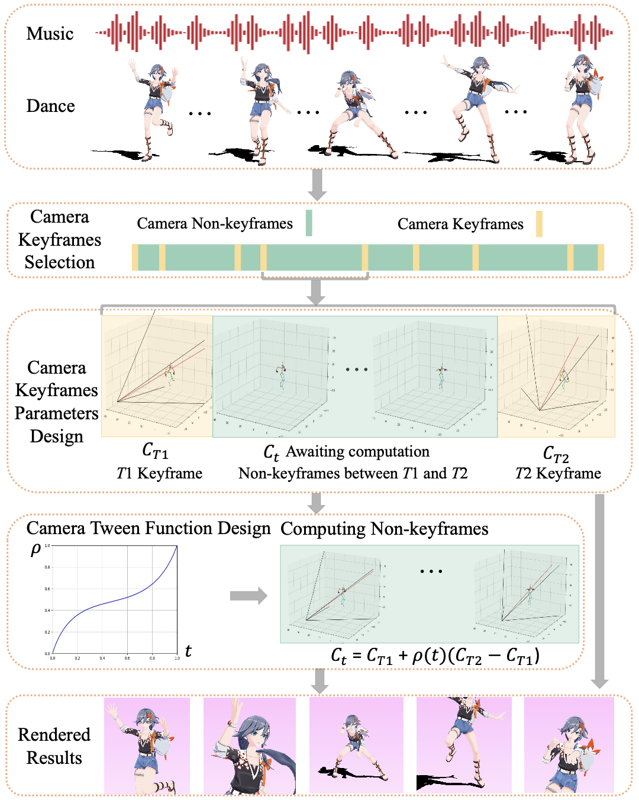

|
Synthesizing camera movements from music and dance is highly challenging due to the contradicting requirements and complexities of dance cinematography. Unlike human movements, which are always continuous, dance camera movements involve both continuous sequences of variable lengths and sudden drastic changes to simulate the switching of multiple cameras. However, in previous works, every camera frame is equally treated and this causes jittering and unavoidable smoothing in post-processing. To solve these problems, we propose to integrate animator dance cinematography knowledge by formulating this task as a three-stage process: keyframe detection, keyframe synthesis, and tween function prediction. Following this formulation, we design a novel end-to-end dance camera synthesis framework DanceCamAnimator, which imitates human animation procedures and shows powerful keyframe-based controllability with variable lengths. Extensive experiments on the DCM dataset demonstrate that our method surpasses previous baselines quantitatively and qualitatively. |

Hierarchical dance-camera-making procedure by animators. |
Challenges in 3D dance camera synthesis. Dance camera movements are not entirely continuous because they consist of smooth complete shots and abrupt shot changes. Moreover, small disturbances can lead to big shakes of the dancer in the rendered video. These issues prevent neural networks from synthesizing satisfactory dance camera movements.
Overall framework of DanceCamAnimator. In the Camera Keyframe Detection stage, the model utilizes music-dance context and temporal keyframe history to generate subsequent temporal keyframe tags. Next, for each pair of adjacent keyframes, the Camera Keyframe Synthesis stage takes music-dance context and camera history as input to synthesize camera keyframe motions. Given camera keyframe motions, camera history, and music-dance context, the final stage predicts tween function values to calculate in-between non-keyframe camera movements. Encoders with the same name share structures in different stages but are trained separately. Stages 2&3 are trained together and conducted alternately during inference.
@InProceedings{Wang_2024_CVPR,
author = {Wang, Zixuan and Jia, Jia and Sun, Shikun and Wu, Haozhe and Han, Rong and Li, Zhenyu and Tang, Di and Zhou, Jiaqing and Luo, Jiebo},
title = {DanceCamera3D: 3D Camera Movement Synthesis with Music and Dance},
booktitle = {Proceedings of the IEEE/CVF Conference on Computer Vision and Pattern Recognition (CVPR)},
month = {June},
year = {2024},
pages = {7892-7901}
}
@InProceedings{wang2024dancecamanimator,
title={DanceCamAnimator: Keyframe-Based Controllable 3D Dance Camera Synthesis},
author={Wang, Zixuan and Li, Jiayi and Qin, Xiaoyu and Sun, Shikun and Zhou, Songtao and Jia, Jia and Luo, Jiebo},
booktitle={Proceedings of the 32nd ACM International Conference on Multimedia},
pages={xxxx--xxxx},
year={2024}
}